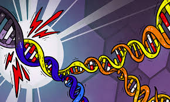
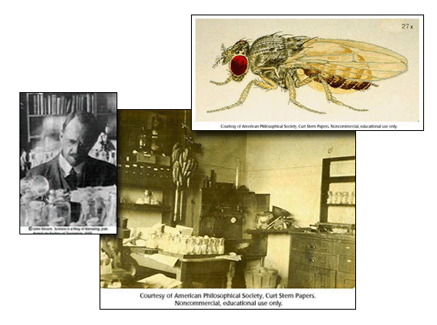
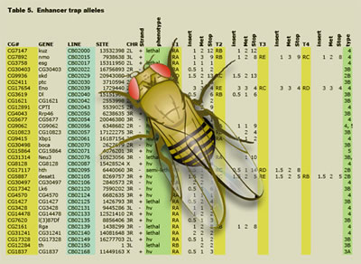
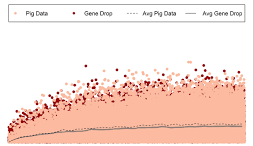
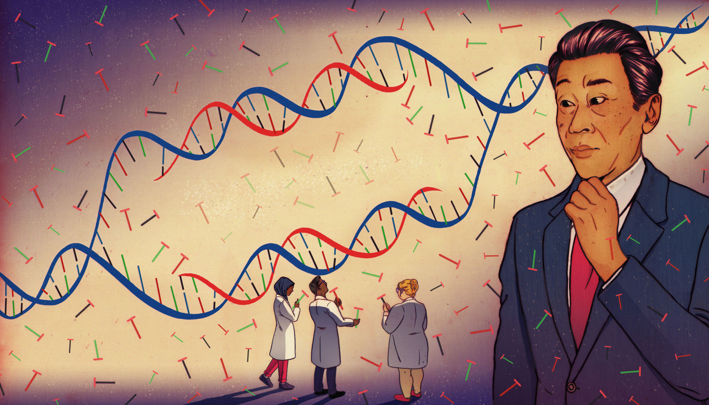

The same spark ignited a flame in two minds oceans apart. Alfred Russel Wallace and Charles Darwin independently come up with the theory of Evolution. The theory reveals something very simple and fundamental - life isn't fixed and is constantly adapting and undergoing change. Over time, this change gives rise to diversity and new species
THE AFTERMATH

Hugo de Vries working in his lab in 1901 with evening primose plants discovered that new traits can suddenly appear in a single generation. These traits were heritable which made led Hugo to propose the idea of mutations - evolution working through sudden jumps and not just gradual change
Experiments of Thomas Hunt Morgan (1910)
In 1910, Thomas Hunt Morgan worked with a fruit fly called Drosophila Melanogaster to study genetics and how traits are inherited. At that period of time, the idea of a gene was a purely theoretical idea and a very controversial one too. No scientise had been able to locate a gene. Many theories existed side by side and evolution itself, which was proposed by Darwin was not a very strong theory because it lacked a very clear mechanistic explanation.
T.H. Morgan chose the fruit fly Drosophia Melanogaster for these experiments because it was small, reproduced quickly, produced a large number of offsprings at one time and its sexual dimorphism. This made it ideal for tracking the traits across many generations. He and his team began by examining thousands of flies under controlled conditions, tracking traits like eye color, wing shape and body structure. Most flies followed the expected pattern of inheritance, but sometimes, unusual traits would appear. Famously, a single male fly with white eyes instead of red.

Far from being an aberrant event, Morgan followed this unique strain of flies, which did not inherit its trait by chance but followed the pattern of inheritance related to gender, appearing predominantly in males. The result was the conclusion that this trait was dependent on the inheritance mechanism and specifically was located on the X chromosome. It became the first empirical proof of geneticists' assumption regarding the physical location of genes within chromosomes.
The further research proved that the genes located on the same chromosome were linked together. Nevertheless, the linkage was not permanent, as genes could break apart and be redistributed among the offspring during reproductive processes. Hence, inheritance had a structural nature since its mechanism involved the participation of physical structures, chromosomes, which interacted.
Above all else, however, the research proved that mutations were real phenomena, which could be observed and traced through different generations. Therefore, mutations became the mechanism of variation on which natural selection operated. In other words, it provided biology with a foundation for understanding evolution through genetics.

If genes are in individuals, how do populations evolve?

During the 1930s, Fisher along with other population geneticists provided an effective mathematical framework for understanding the process of evolution on an entire population. In place of looking at evolution from the point of view of individuals, they were able to show that evolution was essentially the evolution of the frequencies of genes over generations. This was a powerful realization that the process of evolution through natural selection involved the changing frequency of genes depending on whether they had an advantage or disadvantage.
Neutral Theory of Evolution (1968)
Neutral Theory of Evolution, proposed in 1968, explains evolution at a molecular level. This theory rejects the notion that all evolution is driven completely by natural selection. The theory says that most DNA changes are neutral, that is to say, they do not harm or benefit an organism. Since these changes are neutral, they do not get selected for or against through natural selection and they spread throughout the population purely by chance. This process is called genetic drift.

Motoo Kimura came up with the theory of the neutral theory of molecular evolution during the late 1960s, which marked a revolution in understanding genetics evolution. Rather than assuming that the majority of changes in the course of evolution were caused by natural selection, the neutral theory asserts that a huge number of variations in molecules, meaning changes in the DNA sequence, are indeed neutral.
According to the neutral theory, most mutations in the DNA molecules are neither detrimental nor advantageous. In other words, they do not have a significant effect on survival. Therefore, such mutations cannot be selected for or against because they have no impact on survival. As a result, such mutations become prevalent in a population due to genetic drift, which refers to random chance.
An additional conclusion drawn by the neutral theory is that molecular evolution is usually random, and not driven by improvement or adaptation. Although the process of natural selection remains essential for creating new advantageous features, which influence the organism's survival, such as its physical characteristics, behavior, or physiological functions, the variation observed in DNA may be accumulating quietly.
Moreover, the theory was able to clarify the reason why there exists a fairly consistent rate of molecular changes across numerous different organisms. Since most of the mutations that occur are neutral, then, if they are accumulated randomly, they will create an even molecular clock of evolution.
Therefore, the neutral theory does not oppose Darwin's theory of natural selection. Instead, it enhances it by illustrating how the process of evolution can occur with a combination of both mechanisms. Also, it highlights the significant part that chance plays on the molecular level of biological organization.
Made by:
Ishmeet Singh Kahlon
MS25121
BIO102 Creative Expression: The History of Evolution as a Science